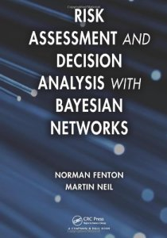
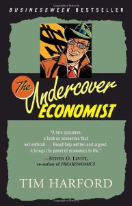
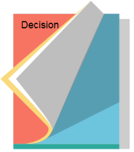

Knowledge Content Library
194
Making Decisions
by Dennis Lindley
Book shows that only maximization of expected utility leads to sensible decision-making.
Book shows that only maximization of expected utility leads to sensible decision-making.
continue to: amazon.com
195
The (Mis)behavior of Markets: A Fractal View of Financial Turbulence
by Benoit Mandelbrot and Richard L. Hudson
Mandelbrot's first book for lay readers on finance, a subject he has studied since the 1960s.
Mandelbrot's first book for lay readers on finance, a subject he has studied since the 1960s.
continue to: amazon.com
196
Probability Theory: The Logic of Science
by E.T. Jaynes
An unabashed, hard sell of the Bayesian approach to statistics.
An unabashed, hard sell of the Bayesian approach to statistics.
continue to: amazon.com
364
Theory of Games and Economic Behavior
By John Von Neumann and Oskar Morgenstern
This foundational work on Game Theory contains the method for finding mutually consistent solutions for two-person zero-sum games.
This foundational work on Game Theory contains the method for finding mutually consistent solutions for two-person zero-sum games.
197
The Psychology of Judgment and Decision Making
by Scott Plous
Comprehensive introduction to the field with a strong focus on the social aspects of decision making processes.
Comprehensive introduction to the field with a strong focus on the social aspects of decision making processes.
continue to: amazon.com
354
The Righteous Mind: Why Good People Are Divided by Politics and Religion

by Jonathan Haidt
As America descends deeper into polarization and paralysis, social psychologist Jonathan Haidt has done the seemingly impossible—challenged conventional thinking about morality, politics, and religion in a way that speaks to everyone on the political spectrum.
As America descends deeper into polarization and paralysis, social psychologist Jonathan Haidt has done the seemingly impossible—challenged conventional thinking about morality, politics, and religion in a way that speaks to everyone on the political spectrum.
continue to: amazon.com
198
Risk Assessment and Decision Analysis with Bayesian Networks

by Norman Fenton and Martin Neil
Explains how to incorporate knowledge with data to develop and use causal models of risk that provide powerful insights and better decision making.
Explains how to incorporate knowledge with data to develop and use causal models of risk that provide powerful insights and better decision making.
continue to: amazon.com
352
Overcoming Organizational Defenses: Facilitating Organizational Learning

by Chris Argyris
Explains how to address various defenses to change in organizations.
Explains how to address various defenses to change in organizations.
continue to: amazon.com
199
Structured Decision Making: A Practical Guide to Environmental Management Choices
by Robin Gregory, Lee Failing, Michael Harstone, Graham Long, Tim McDaniels, Dan Ohlson
Short introductory guide to this form of decision making aimed at environmental managers and scientists.
Short introductory guide to this form of decision making aimed at environmental managers and scientists.
continue to: amazon.com
351
Getting to Yes: Negotiating Agreement Without Giving In

by Roger Fisher, William L. Ury, Bruce Patton
Offers a proven, step-by-step strategy for coming to mutually acceptable agreements in every sort of conflict.
Offers a proven, step-by-step strategy for coming to mutually acceptable agreements in every sort of conflict.
continue to: amazon.com
200
The Undercover Economist

by Tim Harford
Harford gracefully explains abstruse ideas like pricing along the demand curve and game theory using real world examples without relying on graphs or jargon.
Harford gracefully explains abstruse ideas like pricing along the demand curve and game theory using real world examples without relying on graphs or jargon.
continue to: amazon.com
346
Project Economics and Decision Analysis: Probabilistic Models
by M.A. Mian
Presents the concepts of decision analysis, incorporating risk and uncertainty as applied to capital investments.
Presents the concepts of decision analysis, incorporating risk and uncertainty as applied to capital investments.
continue to: amazon.com
300
The Evolution of Decision Analysis

By Ronald Howard
Article #1 in The Principles and Applications of Decision Analysis (the "Blue Books")
Article #1 in The Principles and Applications of Decision Analysis (the "Blue Books")
301
The Difficulty of Assessing Uncertainty
By Ed Capen
Article #32 in The Principles and Applications of Decision Analysis (the "Blue Books")
Article #32 in The Principles and Applications of Decision Analysis (the "Blue Books")
302
Probability Coding in Decision Analysis
By Carl Spetzler and Carl-Axel Stael von Holstein
Article #33 in The Principles and Applications of Decision Analysis (the "Blue Books")
Article #33 in The Principles and Applications of Decision Analysis (the "Blue Books")
303
Influence Diagrams
By Ronald Howard and James Matheson
Article #37 in The Principles and Applications of Decision Analysis (the "Blue Books")
Article #37 in The Principles and Applications of Decision Analysis (the "Blue Books")
304
Judgments Under Uncertainty: Heuristics and Biases
By Amos Tversky and Daniel Kahneman
Article #47 in The Principles and Applications of Decision Analysis (the "Blue Books")
Article #47 in The Principles and Applications of Decision Analysis (the "Blue Books")
305
Prospect Theory: An Analysis of Decision Under Risk
By Daniel Kahneman and Amos Tversky
Article #48 in The Principles and Applications of Decision Analysis (the "Blue Books")
Article #48 in The Principles and Applications of Decision Analysis (the "Blue Books")
306
The Framing of Decisions and the Psychology of Choice
By Amos Tversky and Daniel Kahneman
Article #49 in The Principles and Applications of Decision Analysis (the "Blue Books")
Article #49 in The Principles and Applications of Decision Analysis (the "Blue Books")
532
Estimating Predictive Probability of Success
Shaun Comfort, Publications (Journal Article)